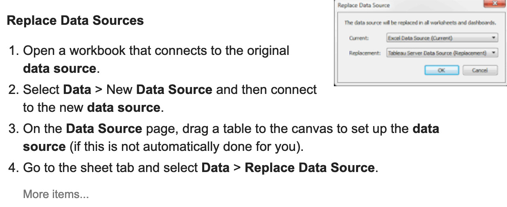
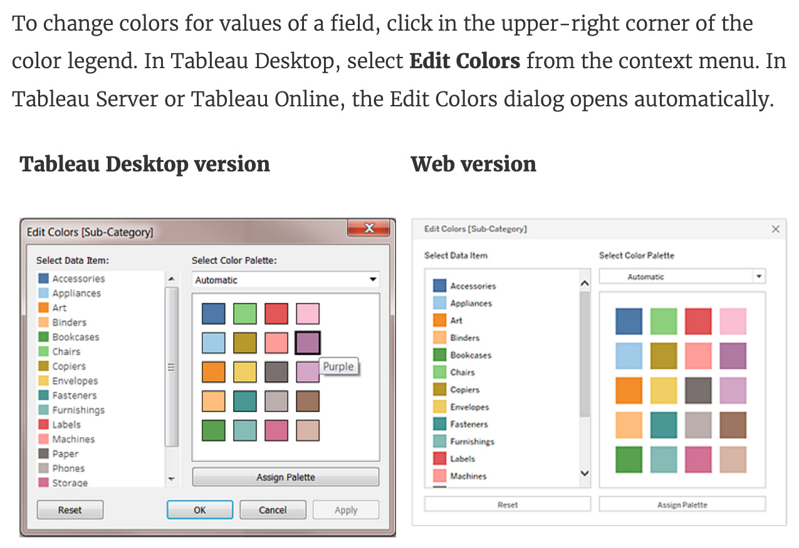
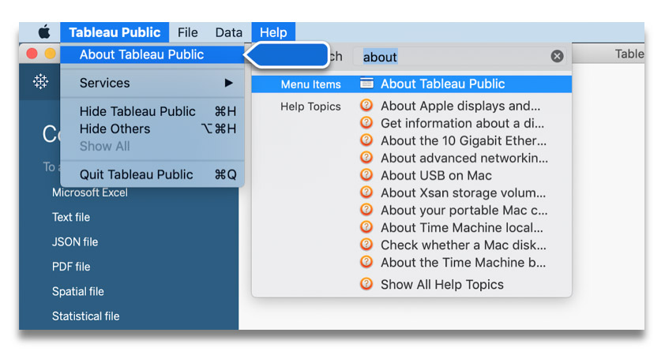
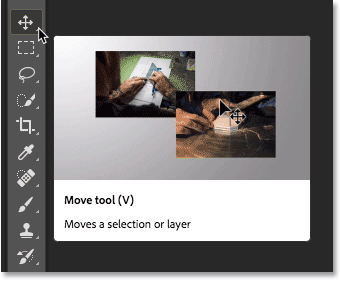
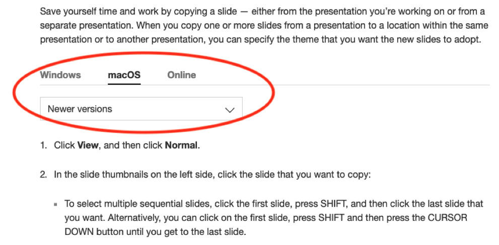

Tableau Help Evaluation
Usability Study
Summary
BACKGROUND
Tableau develops and distributes interactive data visualization software to help its customers store, analyze, and explain data.
Tableau products provide a large selection of services, including mapping functionality, custom geocoding, real-time operations, and data cleaning. Users can purchase Tableau Desktop, Tableau Server, and Tableau Online. Further, Tableau Reader and Tableau Public are available for free. A disadvantage of this tremendous range is that users may be confused when seeking help.
When users have difficulty with a Tableau product, they often search online (e.g., Google) for support rather than first trying the product's built-in Help function. An advantage of the built-in Help is that it is always written for the user's Tableau version. For users without the most recent version of the product, searching outside of Tableau can result in frustration as online searches generally provide information about the most recent version. Further, users often do not immediately recall the exact version they use, thus leading to more difficulty when they seek product-specific help on Tableau's Help pages.
Tableau was interested in improving user help search experience and wanted more information about how users seek help to inform this work.
RESEARCH QUESTIONS
How do Tableau users find help?
- What are the pros and cons of each path?
- Do search methods differ by user experience level?
- How do users identify the version number?
- What are the pain points for identifying the version number?
MY ROLE
Usability Tester
TIMEFRAME
10 weeks (Winter 2019)
Methods
RECRUITMENT
Participants were recruited through word-of-mouth and social media posts.
PARTICIPANTS
In total, 10 individuals volunteered to join the study. Given that 5 participants is generally considered the minimum for usability research of this kind, this sample size can be viewed as more than adequate.
|
Participants 10 adults |
Demographics 8 males, 2 females |
Testing Environment 5 in-person, 5 remote |
|
Tableau Expertise 5 novices 3 experienced 2 advanced |
Background 8 researchers / analysts 2 designers / creatives |
Usage 2 professional 5 academic 3 first-timers |
TASKS AND METRICS
Pre-testing interviews: during the first portion of the testing, we engaged participants in open-ended questions about their general methods of searching for help when using the software. We evaluated these data by gleaning and analyzing the common themes and frequencies.
Think aloud testing: the next portion of the testing consisted of unobtrusively observing participants complete the tasks while describing their actions and thoughts. We noted the pain points and decisions made.
Tasks |
Metrics |
|
1. "Imagine you have been trying to figure out how to [Tableau task] and you need help. Please find the answer the way you normally would for software of this type." (a) For users familiar with multiple Tableau products, ask whether their process changes by product. (b) For users familiar with competitors' products (e.g. Microsoft Power BI), ask about their process for similar tasks. 2. "Please identify what Tableau version you are using." |
|
Participatory design: after the testing, we interviewed participants to understand how they felt about the tasks (e.g. task difficulty level, satisfaction with the results, etc.) and asked them to share their suggestions on how they would prefer to get help.
Findings
HELP PATHS


|
|
|
⃰ Usability team's observation |
|
⃰ Usability team's observation |

|
|
TABLEAU VERSION IDENTIFICATION
6 users identified their version within 30 seconds without prompting. 4 users took longer than 30 seconds or failed to recognize it.
|
|
Recommendations
|
Usability Issues
|
Recommendations
|
|
|
|

|
|
|
|

|
Limitations and Next Steps
Limitations |
Next Steps |
|
|
|
|
|
|
|
|